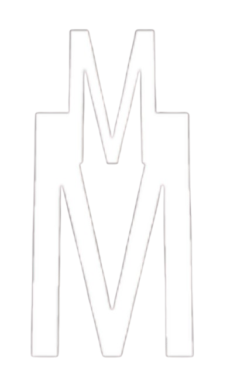

Official MacroMag Foundation Supporter
Classic donate, small for you, big for Foundation. MacroMag is an open-source hardware-software ecosystem licensed under GNU GPL v3.0, focused on …
Contribute
Welcome to the MacroMag-32 wiki! I'm an open-source advocate tired of modern hardware turning into corporate e-waste due to server lockouts and Efuse blocks. As a challenge, I started MacroMag-32 – a 32-bit offline-first architecture simulated via a Python/C++ emulator. I really like Linux Creator Philosophy, so I decided to talk to stop locked e-waste devices when corporate turn off servers. My vision is creating with others a system like free Linux with 5,000 offline apps, options, hidden BIOS, without using internet. The vision is a modular computer where hardware parts connect via magnets, running a deterministic microkernel with a massive base of native offline operations. I've just pushed the initial code repository including a bare-bones compiler and assembly logic. I'm a realist and I know building hardware is tough, so I am focusing on the software emulation layer first. Looking for systems engineers (C/Rust/Python) to review the architecture, help with the compiler pipeline, and roast my code! Adrian. Repository: https://github.com/MacroMag-os/MacroMag-32
MacroMag-32 – a 32-bit offline architecture based on magnetic modularity to fight e-waste. The first Python emulator is on my GitHub (GPL v3). I need C/Rust devs and engineers to help build the microkernel and figure out the hardware physics. MacroMag-32 wants to get 5,000 functions, hidden BIOS, apps, bash, programs without using network; all packages are built into the system. To society: help complicate the kernel, write 5,000 programs to the system inside, grow up the system. Add pull requests to grow the system! – Adrian Morawski (2026)
Classic donate, small for you, big for Foundation. MacroMag is an open-source hardware-software ecosystem licensed under GNU GPL v3.0, focused on …
ContributeCreate the official website “macromag.org” to get the MacroMag project more official. It's really important to us to get our own site :)
$0 of $500 USD raised (0%)
ContributeLimited: 10 of 10 left
Support us and get MacroMag e-waste fighters thanks! We want to buy things only if this supports MacroMag Foundation open-source side.
$0 of $1000 USD raised (0%)
ContributeMake a one-time or recurring contribution.
Contribute